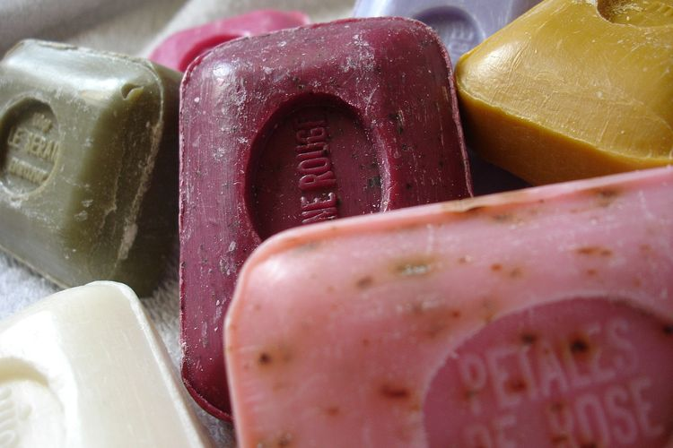
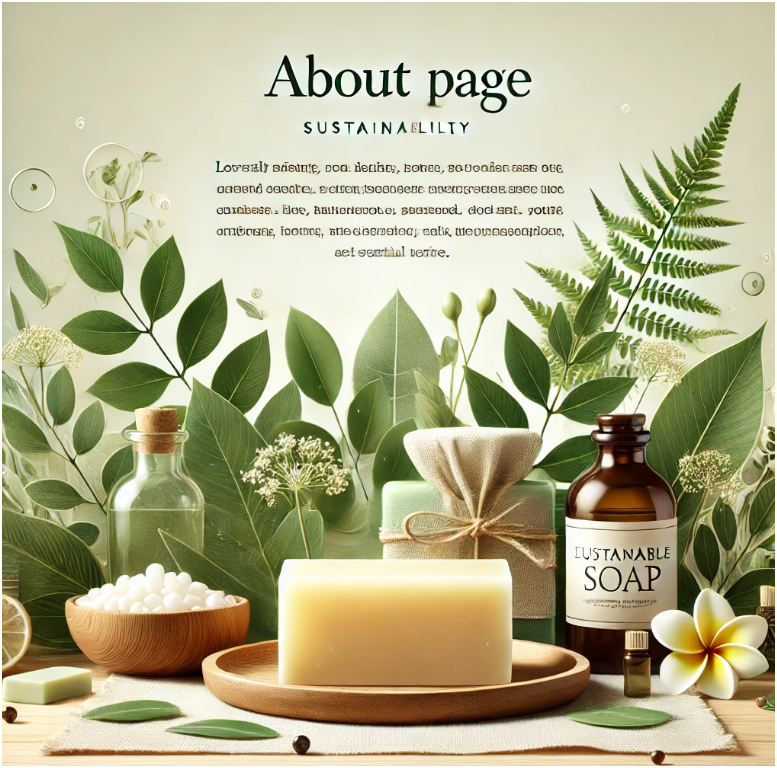
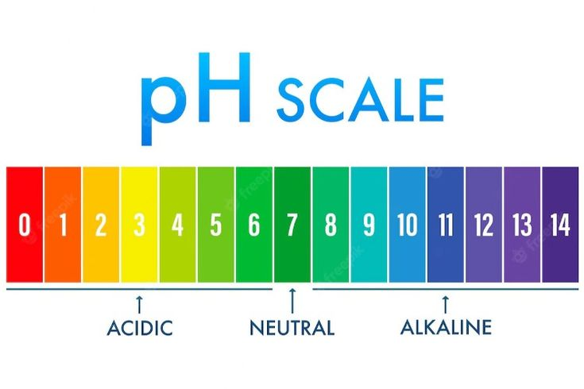

Saponifikasi Ramah Lingkungan
Proses aman dan efisien yang mengubah minyak alami menjadi sabun tanpa residu berbahaya. Dengan teknik ini, produk I SOAP memberikan pembersihan optimal sekaligus menjaga lingkungan tetap sehat.

Formulasi Inovatif
I SOAP menggunakan kombinasi bahan alami seperti minyak kelapa, gliserin, dan minyak esensial. Formulasi ini tidak hanya membersihkan secara efektif tetapi juga menjaga kelembapan dan kesehatan kulit.

Sistem Penyeimbangan pH
Dengan pH yang seimbang, I SOAP aman digunakan untuk semua jenis kulit, termasuk kulit sensitif. Ini membantu mencegah iritasi dan memastikan kebersihan maksimal tanpa merusak lapisan pelindung kulit.
Pengemasan Ramah Lingkungan
Produk I SOAP dikemas menggunakan material biodegradable yang dapat terurai secara alami, membantu mengurangi limbah plastik dan mendukung keberlanjutan.